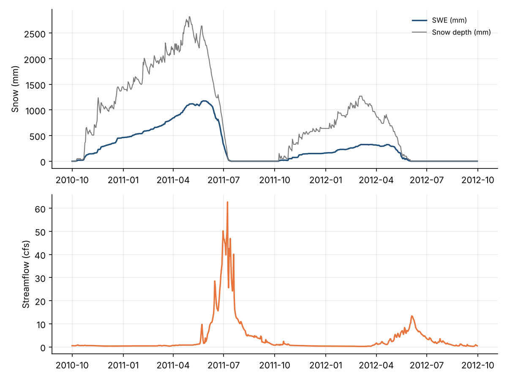
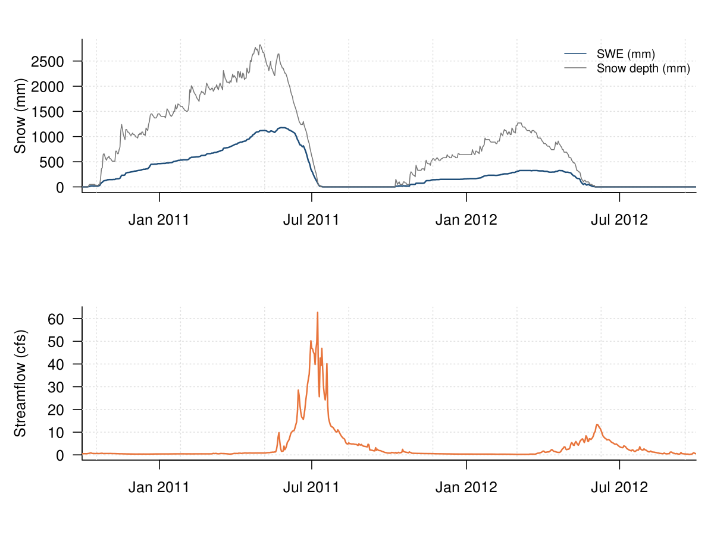
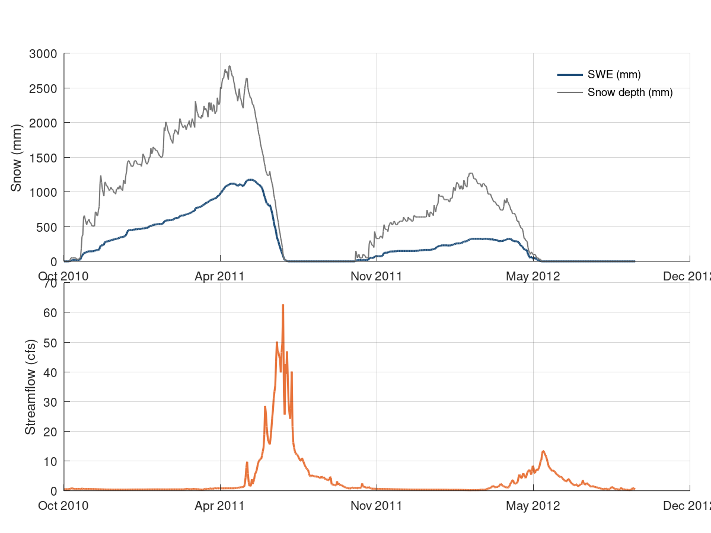

Chapter 6 · Snow and Snowmelt
SNOTEL snow water equivalent, snow depth and USGS streamflow, WY2011–WY2012
SNOTEL site 1031 SWE and depth with USGS 06614800 discharge.
Source: Chapter 6 draft; data supplied by chapter author (snotel1031_usgs06614800_WY2011_WY2012.csv)
Data: snotel1031_usgs06614800_WY2011_WY2012.csv

Code: snotel_swe_streamflow.py · image: figure_python.png

"""SNOTEL snow water equivalent, snow depth and USGS streamflow, WY2011–WY2012
Chapter 6 draft; data supplied by chapter author (snotel1031_usgs06614800_WY2011_WY2012.csv)
Run: python3 snotel_swe_streamflow.py -> figure_python.png"""
import numpy as np
import pandas as pd
import matplotlib
matplotlib.use("Agg")
import matplotlib.pyplot as plt
a = pd.read_csv("snotel1031_usgs06614800_WY2011_WY2012.csv")
a["date"] = pd.to_datetime(a["date"], format="%Y-%m-%d")
fig, axes = plt.subplots(2, 1, figsize=(8, 6), squeeze=False, gridspec_kw={"height_ratios": [1, 1]})
axes = axes[:, 0]
ax = axes[0]
ax.plot(a["date"], a["swe_mm"], color="#1f4e79", lw=1.6, ls="-", label="SWE (mm)")
ax.plot(a["date"], a["depth_mm"], color="#777777", lw=1, ls="-", label="Snow depth (mm)")
ax.set_ylabel("Snow (mm)")
ax.legend(frameon=False, loc="upper right", fontsize=8)
ax.grid(alpha=0.25)
for s in ("top", "right"): ax.spines[s].set_visible(False)
ax = axes[1]
ax.plot(a["date"], a["flow_cfs"], color="#e8743b", lw=1.6, ls="-")
ax.set_ylabel("Streamflow (cfs)")
ax.grid(alpha=0.25)
for s in ("top", "right"): ax.spines[s].set_visible(False)
fig.tight_layout()
fig.savefig("figure_python.png", dpi=150)

Code: snotel_swe_streamflow.R · image: figure_r.png

# SNOTEL snow water equivalent, snow depth and USGS streamflow, WY2011–WY2012
# Chapter 6 draft; data supplied by chapter author (snotel1031_usgs06614800_WY2011_WY2012.csv)
# Run: Rscript snotel_swe_streamflow.R -> figure_r.png (base R, no packages needed)
a <- read.csv("snotel1031_usgs06614800_WY2011_WY2012.csv", stringsAsFactors = FALSE)
a$date <- as.Date(a$date, format = "%Y-%m-%d")
png("figure_r.png", width = 1200, height = 900, res = 150)
par(mfrow = c(2, 1), mar = c(4.2, 4.6, 2.2, 1), las = 1)
layout(matrix(1:2, ncol = 1), heights = c(1,1))
par(mar = c(4.2, 4.6, 2.2, 1), las = 1)
plot(NA, xlim = range(c(a$date, a$date), na.rm = TRUE), ylim = range(c(a$swe_mm, a$depth_mm), na.rm = TRUE), log = "", xlab = "", ylab = "Snow (mm)", bty = "l", xaxt = "n", xaxs = "i")
grid(col = "grey88")
axis.Date(1, x = a$date, format = "%b %Y")
lines(a$date, a$swe_mm, col = "#1f4e79", lwd = 1.6, lty = 1)
lines(a$date, a$depth_mm, col = "#777777", lwd = 1, lty = 1)
legend("topright", legend = c("SWE (mm)", "Snow depth (mm)"), col = c("#1f4e79", "#777777"), lty = c(1, 1), pch = c(NA, NA), bty = "n", cex = 0.8)
plot(NA, xlim = range(c(a$date), na.rm = TRUE), ylim = range(c(a$flow_cfs), na.rm = TRUE), log = "", xlab = "", ylab = "Streamflow (cfs)", bty = "l", xaxt = "n", xaxs = "i")
grid(col = "grey88")
axis.Date(1, x = a$date, format = "%b %Y")
lines(a$date, a$flow_cfs, col = "#e8743b", lwd = 1.6, lty = 1)
invisible(dev.off())

Code: snotel_swe_streamflow.m · image: figure_matlab.png

% SNOTEL snow water equivalent, snow depth and USGS streamflow, WY2011–WY2012
% Chapter 6 draft; data supplied by chapter author (snotel1031_usgs06614800_WY2011_WY2012.csv)
% Run: run snotel_swe_streamflow.m -> figure_matlab.png (works in MATLAB and GNU Octave)
clear; close all;
fid = fopen('snotel1031_usgs06614800_WY2011_WY2012.csv'); fgetl(fid);
C = textscan(fid, '%s%f%f%f%f', 'Delimiter', ',', 'EmptyValue', NaN); fclose(fid);
a.date = C{1};
a.wy = C{2};
a.swe_mm = C{3};
a.depth_mm = C{4};
a.flow_cfs = C{5};
a.date = strrep(a.date, '"', '');
a.date = datenum(a.date, 'yyyy-mm-dd');
a_t0 = floor(min(a.date)); a.date = a.date - a_t0; % offset keeps plotting precision (Octave uses single precision)
figure('Visible', 'off', 'Position', [100 100 800 600], 'Color', 'w');
axes('Position', [0.09 0.510 0.88 0.390]); hold on;
h0 = plot(a.date, a.swe_mm, '-', 'Color', [0.122, 0.306, 0.475], 'LineWidth', 1.6);
h1 = plot(a.date, a.depth_mm, '-', 'Color', [0.467, 0.467, 0.467], 'LineWidth', 1);
xt = get(gca, 'XTick'); set(gca, 'XTick', xt, 'XTickLabel', datestr(xt + a_t0, 'mmm yyyy'));
ylabel('Snow (mm)');
box off; grid on; set(gca, 'GridAlpha', 0.2, 'Layer', 'top');
legend([h0, h1], {'SWE (mm)', 'Snow depth (mm)'}, 'Location', 'northeast'); legend boxoff;
axes('Position', [0.09 0.080 0.88 0.390]); hold on;
h0 = plot(a.date, a.flow_cfs, '-', 'Color', [0.91, 0.455, 0.231], 'LineWidth', 1.6);
xt = get(gca, 'XTick'); set(gca, 'XTick', xt, 'XTickLabel', datestr(xt + a_t0, 'mmm yyyy'));
ylabel('Streamflow (cfs)');
box off; grid on; set(gca, 'GridAlpha', 0.2, 'Layer', 'top');
print('-dpng', '-r150', 'figure_matlab.png');